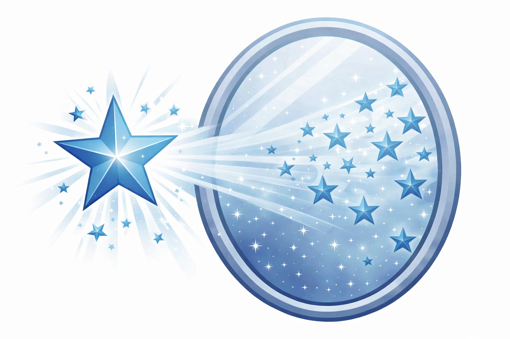

Экосистема AI-агентов на базе Hermes Agent (Nous Research): прикладные департаменты — от юридического до заводского цеха — и инфраструктура их развёртывания. Всё локально, данные не покидают периметр.